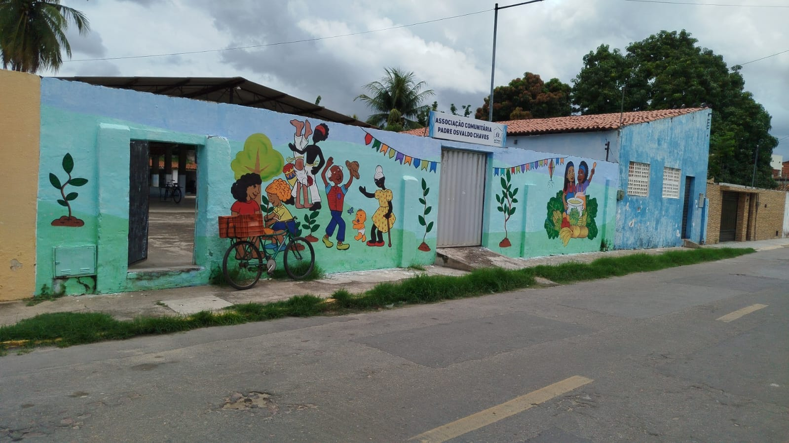

Bloco 2 · Extensão · FLF


1º Contato · Extensão
Associação Comunitária
Padre Osvaldo Chaves
Organização territorial com murais que celebram a cultura e identidade local.
Murais narram visualmente o cotidiano do bairro.
Diálogo direto com moradores de longa data.
Acervo fotográfico integrado ao patrimônio digital.
A sede como suporte físico da memória visual sobralense.
Bloco 2 · Produto Digital
Devolutiva Comunitária
Sobral —
Lugares de Memória
Plataforma digital consolidando as memórias coletadas em campo.
8 espaços catalogados com fotos e depoimentos.
Acervo histórico para ativação de memórias.
Site responsivo acessível a toda a comunidade.
luisaugustomp.github.io/sobral-memoria